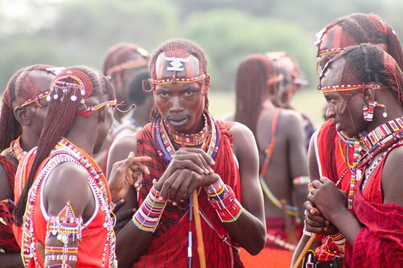

تستخدم قبيلة ماساي البصق بإعتباره رمز مقدس ويمكن أن يحل البركة على الآخرين ، فمثلاً نجد الرجال يبصقون على حديثي الولادة لإعتقادهم أن هذا سيبعد الشر عن المولود وسيمنعه من الشيطان ، ويمنحهم القوة ، كذلك نجدهم يبصقون على أيديهم قبل السلام باليد مع الكبار في السن أو الكهنة أو أي شخص آخر يستحق الإحترام اي ان التحية لأحد الشيوخ البصق في يديه ، و يستمر ذلك التقليد وتلك العادة الغريبة في عادات الزواج ، كواحدة من أغرب عادات وتقاليد الزواج المتبعة في أفريقيا والعالم حيث يبصق والد العروس على رأس إبنته خلال مراسم زواج عجيبة وأغرب من الخيال !
المزيد هنا